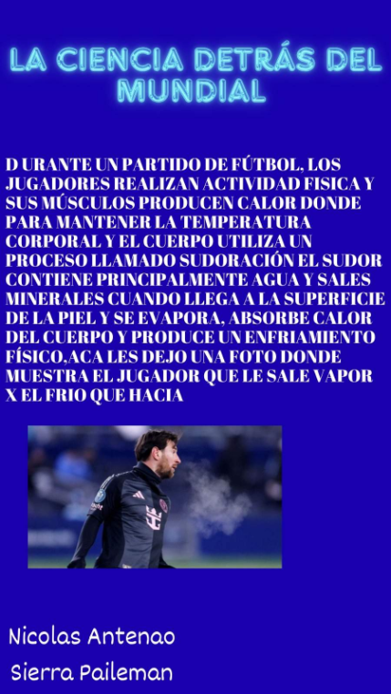

Materiales de los botines
Están fabricados mediante procesos químicos. Pueden ser de cuero natural (con la proteína colágeno) o sintéticos (poliuretano y polímeros). La suela suele ser de caucho o plásticos para dar resistencia y flexibilidad, y los tapones de plástico o sintéticos mejoran el agarre en el césped.

Termorregulación y sudoración
Durante un partido los músculos producen calor. Para mantener la temperatura corporal, el cuerpo suda (agua y sales minerales). Al evaporarse en la piel, el sudor absorbe calor y enfría el cuerpo.
